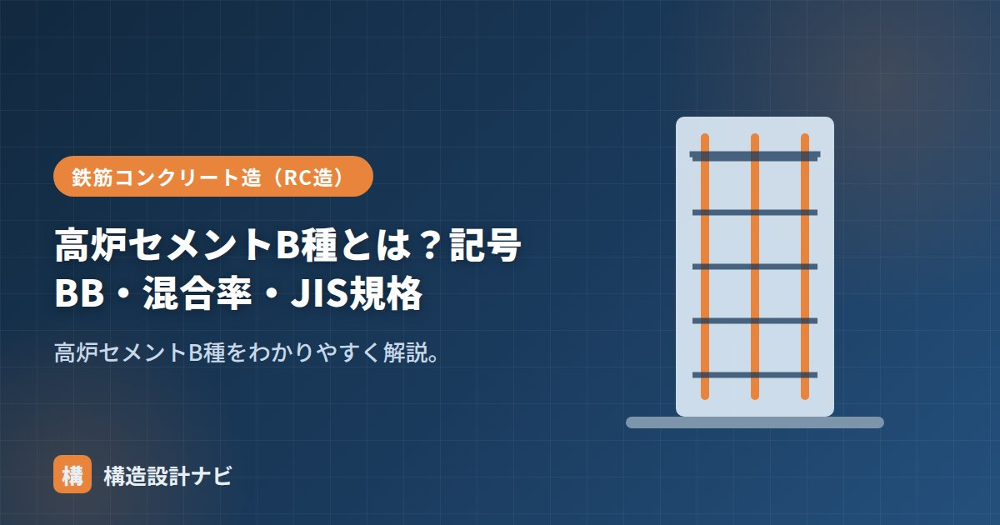

高炉セメントB種とは？記号BB・混合率・JIS規格

高炉セメントB種（記号BB）とは、高炉セメントのうち高炉スラグ微粉末の混合率が30%超〜60%以下と規定された区分で、混合セメントの中で最も一般的に使われる種類です。A種とC種のちょうど中間に位置し、性能と扱いやすさのバランスに優れることから、生コン工場での供給量も豊富です。
- B種はスラグ混合率30%超〜60%以下（記号BB）。JIS R 5211に規定
- 長期強度・低発熱・耐久性・ASR抑制に優れ、A種とC種の中間で扱いやすい
- 高炉セメントの中で流通量・実績が最も多く、実務上の第一選択になりやすい
記号BBと混合率
記号はBB（高炉セメントB種）。高炉スラグ微粉末の割合は30%超〜60%以下です。JIS R 5211（高炉セメント）に規定されています。この混合率の幅はA種（5%超〜30%以下）とC種（60%超〜70%以下）の間にあり、スラグの効果とポルトランドセメントとしての扱いやすさの両方をバランスよく引き出せる範囲といえます。製造方法としては、セメントクリンカーと高炉スラグ微粉末をあらかじめ工場で一緒に粉砕する方法のほか、それぞれ別々に粉砕したものを後から混合する方法があり、いずれもJIS R 5211の規定に適合するようつくられます。
特徴
- 長期強度が伸び、水密性・化学抵抗性が高い。
- 水和熱が低めで温度ひび割れに有利。
- アルカリシリカ反応を抑制。
- A種より混合セメントの利点が明確、C種より初期強度・養生で扱いやすい。
なぜ最も使われるのか
B種は、低発熱・耐久性といった混合セメントの利点を十分に持ちつつ、C種ほど初期強度が遅すぎず養生も過度に厳しくないため、実用上のバランスが最も良い区分です。生コンでも広く供給され、一般のRC造から土木構造物まで幅広く使われます。
主な用途
マスコンクリート（大断面部材）における温度ひび割れの抑制、地下構造物や擁壁など水密性・耐久性が求められる部位、海水や下水に接する構造物など、幅広い用途で標準的に採用されます。特記のない一般建築のRC造でも、生コン工場の在庫状況に応じてB種が使われることが多く、普通ポルトランドセメントと並ぶ主力の選択肢です。
注意点
普通ポルトランドより初期強度がやや遅く湿潤養生が重要です。寒冷期は強度発現に配慮します。型枠の存置期間や現場での養生計画を立てる際は、外気温や部材の断面寸法も踏まえて余裕を持たせることが大切です。
Q1. B種を使うときに設計上とくに注意することは？
初期強度の立ち上がりが緩やかなため、脱型時期や工程計画では余裕を見込みます。構造体強度補正値の考え方も踏まえ、材齢や気温に応じた強度管理を行います。
Q2. B種とC種はどちらを選べばよいですか？
一般的な建築ではB種で十分な低発熱・耐久性が得られます。より高い耐久性や低発熱性が必要な大規模マスコンクリートや厳しい腐食環境では、C種の採用を検討します。
生コン工場を選定する打合せでは、私はまずB種の在庫があるかを確認します。流通量が多く入手性で困ることは少ない一方、初期強度の遅さは工程会議で必ず共有し、脱型時期を現場任せにしないようにしています。
混合率と性能の関係（図解）
B種を使うときの養生・工程
B種でもっとも注意すべきは養生です。普通ポルトランドセメントと同じ感覚で工程を組むと、強度不足や品質低下を招きます。
| 項目 | 普通ポルトランド | 高炉B種 |
|---|---|---|
| 湿潤養生の期間 | 5日以上 | 7日以上 |
| せき板の存置期間（気温15℃以上） | 4日 | 6日 |
| 初期強度の発現 | 標準 | やや遅い（材齢7日で差が出やすい） |
| 寒中期の扱い | 標準 | 強度発現がさらに遅れるため、保温養生の重要度が増す |
高炉セメントの長期強度は、スラグの潜在水硬性が徐々に発現することで得られます。この反応には水分が不可欠で、初期に乾燥させてしまうと反応が止まり、期待した強度・耐久性は永久に得られません。「初期強度は遅いが長期で伸びる」というメリットは、適切な湿潤養生があってはじめて成立するものだと理解しておく必要があります。
よくある質問
Q1. なぜB種が最も多く使われるのですか？
性能と扱いやすさのバランスがもっとも良いためです。スラグ混合率30〜60%という範囲は、低発熱性・耐久性・ASR抑制といった混合セメントの利点がはっきり得られる一方、初期強度の遅れや養生の負担がC種ほど大きくありません。加えて、生コン工場での取り扱い実績が豊富で入手しやすいことも、実務で選ばれる大きな理由です。
Q2. B種と普通ポルトランドはどちらを選ぶべきですか？
部材の大きさと要求性能で判断します。断面が大きく温度ひび割れが懸念される部材、地下や水に接する部位、海に近い環境ではB種が有利です。一方、工期が厳しい、初期強度が必要、中性化を特に抑えたいといった場合は普通ポルトランドが適します。なお、生コン工場によっては地域の標準がどちらかに寄っていることもあるため、事前確認が必要です。
Q3. B種で温度ひび割れは完全に防げますか？
完全には防げません。B種は水和熱を低減できますが、断面が非常に大きい部材では依然として温度上昇が生じます。材料面の対策としては低熱セメントの採用、施工面ではパイプクーリング・打設ブロックの分割・打込み温度の管理といった対策を組み合わせる必要があります。B種の採用は有効な一手ですが、それだけで万全とは考えないほうがよいでしょう。
まとめ
- 高炉セメントB種（記号BB）はスラグ30%超〜60%以下。JIS R 5211。
- 長期強度・低発熱・耐久性・ASR抑制に優れ、バランスが良い。
- 混合セメントの中で最も一般的。初期強度・養生には配慮する。
- マスコン・地下構造物・海洋構造物など幅広い用途で標準的に使われる。